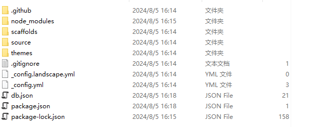
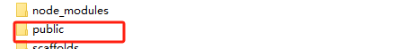
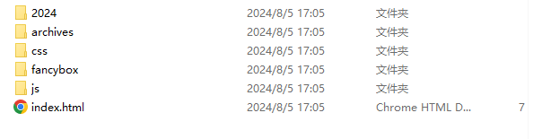
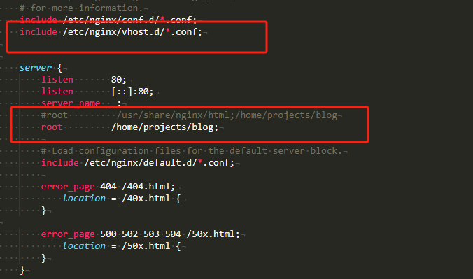
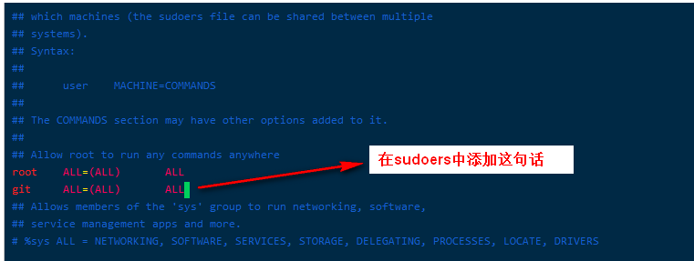
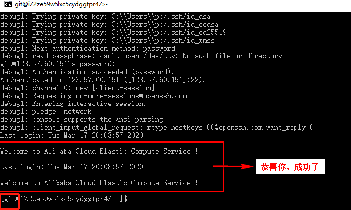
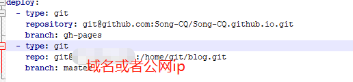

[参考文章]https://blog.csdn.net/weixin_44861399/article/details/104925231
写在开头 对于一个刚接触的门外汉来说，搭建博客，到部署到服务器真的让人崩溃，但是在不断地排错过程中，也渐渐弄懂了一些东西。
从标签就可以看出来涉及到的东西有点多
其实在一开始我只是嫌弃将博客部署到github上加载速度太慢，这与我建立博客的初衷相悖。我是想在自己忘记一些东西的时候上博客一查，
哎？原来我做过这种东西，然后我一看就差不多回忆起来。或者是我做过这个东西，但是很长时间没有用过了,下次再用时突然又不知道怎么用了，
然后看看我当时是怎么做的，就可以找回当初的思路，没办法记性不太好，笑。
闲话不多说，本文差不多是我按照上述文章去一步步搭建的 甚至开头都抄了一段 感谢作者！。在过程中碰到的一些问题，以及怎么解决的,和一些思路。
复盘 完成后复盘了一下过程，个人从程序的角度来理解，部署博客,可以归纳成下面这些必要的步骤
1.【源文件】 blog的静态网站文件
2.【运行源文件的程序】 部署博客的静态文件
3.【程序入口】 别人如何进入观看到你的博客 也就是域名 公网IP
本文从上上述角度出发来实现在自己服务器搭建出完整博客,并让别人使用域名访问。
生成源文件
使用Hexo生成博客的静态文件
1.安装Node.js下载地址;
安装的时候，选择add to path，他会自动配置环境变量,如果没有配置就自己配置一下Node的环境变量。
使用cmd 输入以下命令
node -v
npm -v
出现版本号说明安装成功
2.安装Hexo
使用cmd 输入以下命令
npm install -g hexo-cli
安装完成后输入hexo -v检查是否安装成功。
3.hexo本地部署
在本地新建一个文件夹，我命名它为blog
在这个文件夹下，右键打开cmd 或者cd进入到该目录
输入 hexo init，初始化hexo。
输入 npm install 安装插件
然后blog目录下会出现这些文件夹

输入 hexo g 生成静态博客文件
会发现多了一个public目录 这个目录里面的所有文件和文件夹就是生成的 博客静态文件 也就是 源文件
 到这，我们已经完成了生成源文件。
输入 hexo s 将本地电脑当成服务器进行本地部署测试
打开浏览器输入localhost：4000，可以看到部署好了，有一篇hello World的博客
【运行源文件的程序】
在上面我们已经 将本地电脑当成服务器进行本地部署测试
换句话说就是hexo s 这条命令 在本地电脑上生成了一个4000端口 “程序” ，指向了源文件 ，成了运行源文件的程序
而我的目的很明显并不是只想在本地生成，于是我就得找一个可以部署我们网站源文件的地方
1.github
这是一个代码托管网站，我们可以将网站源文件上传到上面，再启动他的部署静态网站的服务，然后就可以通过github分配的域名访问，比如我的就是 https://song-cq.github.io。
但是很明显，他是国外的网站，在国内的访问速度相当于蚂蚁跑3000米，所以pass。 或者找其他方法为访问github加速
2.gitee
这也是一个代码托管网站，和github差不多，但是他是国内的网站，也就是说不会很慢，我完全可以部署在gitee上。但是在我进行一顿操作之后发现他的静态部署网站的服务暂停调整了，重启时间无通知。
换句话说就是关了，可能是国内审核成本过大，国内相似的网站基本都关了静态部署的服务。
3.云服务器
在阿里云购买服务器,最便宜那一档，一年99。
购买之后需要注意的是要放开端口访问。
点击安全组/管理规则 添加80端口的访问权限
远程链接服务器
使用宝塔面板连接，可以看到清晰的目录结构
宝塔信息
外网面板地址: https://:8888/38632d2f
内网面板地址: https://:8888/38632d2f
username: user
password: baa11757
使用Nginx部署静态网站
在博客上创建一个目录存放博客源文件，我的是/home/projects/blog
1.安装nginx
1.安装
yum install -y nginx
2.启动服务器
systemctl start nginx
systemctl enable nginx
3.在浏览器地址栏中输入你的公网ip，如果打开了有内容网页，说明成功了。
2.配置服务器的路由：
通过公网ip访问，这个地址指向的是nginx，得让他指向我们的博客，就要修改配置文件，找到配置文件etc/nginx/nginx.conf,
并不建议直接修改配置文件，应该先创建一个新的文件，然后采用include的方式，将这个文件包含进nginx.conf中。
新建配置文件
cd /etc/nginx/
mkdir vhost
cd vhost
vim blog.conf
编写配置文件
编辑blog.conf 如下：
server{
listen 80;
root /home/projects/blog;这里填博客目录存放的地址
server_name 这里填域名如(www.baidu.com) 如果暂时没有域名就填阿里云的公网ip，以后有了再改回来;
location /{
}
}
用include插入到nginx.conf中
如果以后还想添加新的网站，也可以在vhost目录下新建一个conf配置文件。然后再用include装入到nginx.conf中。
最后可能会出现只能访问centOS的怪相，
所以，如果出现这个问题了，请你回到这一步，增加一个操作，
就是上图中那个server里面的root后面的路径，替换成你的博客存放位置：例如我的是/home/www/blog（这是我经验所得，可能你就会卡在这一步）。
*** 重启Nginx ***
进入到Nginx的安装目录 输入以下命令
nginx -s reload
3.上传博客文件
将public目录下的所有文件手动上传到服务器存放博客的路径
然后输入公网ip，如果显示出了你的博客，则代表你已经完成将博客部署到服务器。
使用Git将源文件上传到服务器
你完全可以手动将public目录下的所有文件复制到服务器，但是这样明显很麻烦，于是我们使用git
将上一步上传到服务器的博客源文件删除，避免一些权限问题。
*** 安装Nodejs ***
如果已经安装过了就进行下一步
1.换源
curl -sL https://rpm.nodesource.com/setup_10.x | bash -
2.安装
yum install -y nodejs
3.检查版本
node -v
npm -v
有版本消息代表安装成功
*** 安装Git以及配置仓库 ***
1.安装git并查看版本。
1.安装
yum install git
2.查看版本
git --version
git version 1.8.3.1
2.新建git用户，并修改权限
1.新建git用户
adduser -m git
2.修改用户权限
chmod 740 /etc/sudoers
vi /etc/sudoers
添加Git ALL=(ALL) ALL
保存退出后，将权限改回去。
chmod 400 /etc/sudoers
你也可以使用宝塔面板，进入到etc目录，找到sudoers文件，编辑sudoers文件加入Git ALL=(ALL) ALL。
3.设置git用户的密码
passwd git
4.执行以下命令，切换到git用户，在~目录下，可以看到有一个.ssh文件夹
切换到git用户
su git
进入~目录
cd ~
在该目录下创建.ssh文件夹
mkdir .ssh
进入.ssh文件夹
cd /.ssh
5.生成git用户的公钥密钥文件
ssh-keygen
此时在目录下就会有两个文件，分别是id_rsa 和 id_rsa.pub
6.生成 authorized_keys 文件，并复制id_rsa.pub的内容
cp id_rsa.pub authorized_keys
修改authorized_keys文件权限
chmod 600 ~/.ssh/authorized_keys
chmod 700 ~/.ssh
7.在本地主机上打开cmd，使用ssh方式连接云服务器。
ssh -v git@123.57.60.151(这里填的是服务器公网ip)
需要注意的是git@代表的是用git用户登录，这也是为啥前面要创建git用户。
输入密码之后，看到如图，即代表成功！！！！
8.创建一个git的仓库，并且新建一个post-receive文件。
注意以下命令都要使用git用户操作，如果是root请su git 切换到git用户
1.创建并初始化Git仓库
cd ~ //在~目录创建 ，也可以在任何目录，只要进入想要创建目录
git init --bare blog.git // 初始化一个bare类型的Git仓库 ，这种类型没有工作区，
2.新建post—receive文件
vi ~/blog.git/hooks/post-receive //创建一个钩子文件，也就是有客户端上传时执行的文件
3.输入以下内容：
git --work-tree=/home/www/blog --git-dir=/home/git/blog.git checkout -f
4.保存退出之后赋予可执行权限
chmod +x ~/blog.git/hooks/post-receive
//git --work-tree= /home/www/blog
//设置该仓库的工作区（也就是存放博客源文件的目录）
//git-dir=/home/git/blog.git
//指定git仓库的位置
//checkout -f
//检出
该文件就是说在上传了新的变更时，会将最新版本文件检出到工作区目录
- Hexo连接到远端服务器
打开hexo的主目录下的_config.yml,找到 deploy。填写你自己的仓库名字。
hexo g //生成静态博客文件
hexo d //上传博客文件
我的_config.yml填写了两个仓库，一个是github的地址，一个是服务器地址所以他会按顺序先上传github，再上传到自己的服务器
如果出现权限不对，请检查用户是否是git用户，以及服务器上的存放博客的路径是否是git用户
使用域名解析
用个毛，域名备案麻烦的要死，一堆东西，还要居住证。等域名备案完再说。